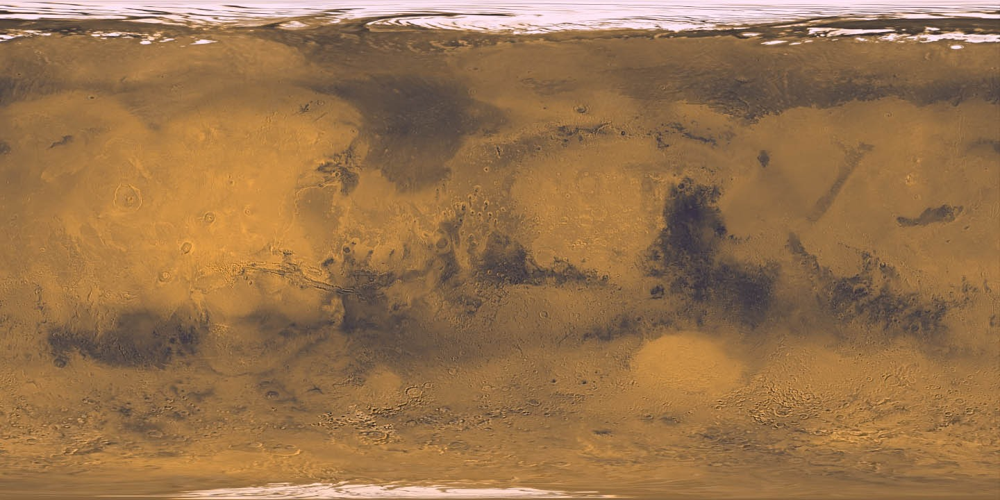

Il Pianeta Rosso, in un click
Scegli il tuo
pezzo di Marte.
Premi il pianeta per iniziare. Un’idea regalo fuori dal mondo, senza valore legale.
Clicca sul pianeta
18° 32′ 44″ N
Il tuo souvenir marziano
Quanti km² vuoi?
Scegli la quantità per generare un’anteprima del certificato simbolico.
Area mostrata sul pianeta: 1 km²
18.532400° N · 226.120900° E
SIMULAZIONE LIVE −68.0 °C · 610 Pa
Modello puramente illustrativo: il terreno non ha valore legale o finanziario reale.
Quanto Marte resta da esplorare?
99,999999%Superficie ancora acquistabile: 144.799.999 km² su 144.800.000 km²
Percentuale calcolata sulla superficie totale di Marte · simulazione dimostrativaClassifica acquirenti
DATI DEMO- 01Miris R.28 km²
- 02Marco V.17 km²
- 03Luna Studio12 km²
- 04Andrea P.6 km²
Nomi e quantità sono esempi preimpostati e non rappresentano acquisti reali.
Orbital survey / high definition
Esplora i crateri

MISSION CONTROL / ACCOUNT
Accedi alla tua missione
Ritrova certificati, codici missione e ordini associati alla tua email.
I tuoi acquisti
Nessun acquisto ancora. Il tuo primo settore ti aspetta su Marte.
Anteprima
Il tuo Marte
Hai scelto simbolicamente 1 km².
226° 12′ 09″ E
Checkout PayPal · 2/2
Metodo di pagamento
Scegliamo la soluzione più comoda e universale per il futuro: carta di debito o credito.
Privacy · Cookie · Condizioni · Rimborsi